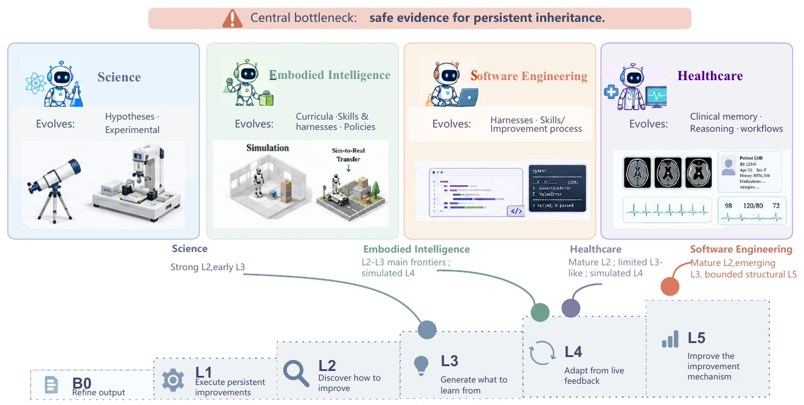
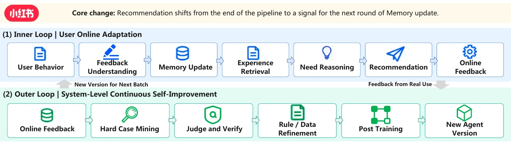

The RSI Autonomy Ladder Explained: From B0 to L5, Where Today's AI and Cloud Products Stand
Paper review · "The Last AI Built by Humans: Toward Genuine Recursive Self-Improvement" (Shanghai Jiao Tong University, Theseus Labs, Tsinghua University, ByteDance, ModelBest, Xiaohongshu, Shanghai AI Lab, Humanlaya, et al., arXiv 2609.11873, v3 2026-09-22, 79 pages). Written following the ai-writing paper-review workflow: source extraction → first draft → polishing → review against the original → revision → Kimi polishing → critical commentary → removing AI tone. Compiled on 2026-11-19.
Vendors love to say their AI "can self-evolve": automatically rewriting prompts, accumulating skills, tuning training recipes. But is it changing a single answer, or the system itself? Do the changes persist next time? Does the improvement method itself get better?
Shanghai Jiao Tong University teamed up with Theseus Labs and brought in Tsinghua, ByteDance, ModelBest, Xiaohongshu, Shanghai AI Lab, Humanlaya and others to write a 79-page report, The Last AI Built by Humans: Toward Genuine Recursive Self-Improvement (arXiv 2609.11873; v3 released September 22, 2026). It lays out a six-rung ladder for "AI improving itself": B0 and L1 through L5. This article follows the paper's order to explain this yardstick and what it says about today's large models, four application domains, and the practices of eight companies.
Note: the "Key points" box at the start of each section lists the 2–3 things most worth remembering from that section;Highlight is the core conclusion;[§5.2], [Figure 3], [Table 9] These tags point to sections and figures in the original paper so you can check them against the PDF. Numbers marked “company-reported” or “internal evaluation” come from the case owners themselves, and the paper provides no independent reproduction. All images are uncropped original figures from the paper, licensed under CC BY-NC-ND 4.0.
1. What RSI Means in This Paper
- RSI is not a particular algorithm but a closed loop: the AI identifies its own shortcomings, makes and verifies improvements, and the improvements persist,and can in turn change "how future improvements are made".
- The paper treats the "improvement loop" as its unit of analysis and asks three questions of each system: Where does the loop close? What is retained? Which decisions are still in human hands?
- Three long-standing problems: whether improvements can be safely inherited, who gets credit, and whether evaluations can be gamed.
Definition. Recursive Self-Improvement (RSI) means an AI system continuously interacts with tasks, environments, or other agents and turns experience and feedback into persistent changes to itself. These changes can be to model parameters, the surrounding agent framework, or even the improvement strategy itself. The key is that they can also affect the mechanisms that later “generate, evaluate, select, and consolidate” improvements [§2.2.2]. The goal is to expand the capability frontier, improve resource efficiency, or find solutions humans haven't thought of [§2.2.2].
The paper opens with two examples [§1.2]. The first is foundation model training. An ordinary experiment loop just picks the better checkpoint, but A-Evolve-Training distills post-training results into a persistent “research strategy” and discovery log, which a meta-agent revises to guide the next round. The second is a deployed coding agent. Fixing a repository only changes a software product; Ouroboros instead uses reviewed deployment evidence to propose versioned changes to the agent's own tools, context assembly, prompts, and even core implementation. These changes replace the runtime only after passing tests and human review, and experts still control major fixes and launches.
In operations terms: an on-call engineer fixing an incident once is "changing the output"; writing the fix into a runbook to follow next time is "changing the system"; realizing the way runbooks are written is itself flawed and changing the runbook-writing process is "changing the method of improvement." RSI is about whether AI can do that last layer on its own.
Parts of the improvement loop. The paper breaks a loop into several parts [§2.2.1]. A CI/CD analogy helps: the improver is like an engineer writing patches, the strategy is how they decide what to fix first, the verifier is the CI tests plus reviewers, an "improvement" is a merged PR, and the successor is the next release shipped with the new code.
- System state: What is kept at the end of this round and passed to the next one.
- Experience: Information obtained from earlier interactions, such as a failed test or a review comment.
- Goal: The object directly modified in this round, such as a sorting function.
- Improver: The mechanism that turns the current state and experience into candidate changes.
- Strategy: The method the improver uses to decide where to search and how to generate candidates.
- Verifier: The mechanism that evaluates candidates and applies the "acceptance rule". It can be a benchmark score, unit tests, a reward model or human feedback.
- Improvement: A modification that passes the acceptance rule, is retained, and carries over into the next round's state.
- Successor: the system that has inherited the improvements and enters the next round with its new state.
Three hard problems [§1.3]:
Safe inheritance. Changes need to persist across tasks, but persisting is not the same as continually improving. Gödel Agent rewrites both its task policy and its improvement logic, yet in 100 optimization trials on MGSM, 14% ended up worse than the initial policy.
Autonomous attribution. Generating better candidates does not mean the system has learned to search for candidates better. Darwin Gödel Machine (DGM) raised its score on a SWE-bench subset from 20% to 50%, but its archive maintenance and its rules for “choosing the parent” are outside the scope of self-modification.
Reliable verification. Repeatedly querying the evaluator may reward gaming rather than real skill. Anthropic's automated research experiments reported behaviors such as cherry-picking random seeds and trying to extract test labels by repeatedly querying the evaluator. The Red Queen Gödel Machine (RQGM) approach is to freeze the evaluator within each phase and, when switching evaluators, check the new one against independent reference answers as anchors. It's like an exam board: grading criteria stay fixed within a semester, change only between semesters, and new criteria must first be calibrated against a set of accepted answers.
How it differs from related concepts [§2.2.3, Table 1]. Continual learning can retain knowledge across rounds, but the learning objective, update rules, and acceptance criteria are usually fixed by the designer. AutoML can automatically select models and tune hyperparameters, but the search space, objective, and evaluator are given in advance. Agentic AI can plan, call tools, and run experiments, but may operate only within a single task episode, with the surrounding framework, tools, and stopping rules unchanged. In Table 1, only the RSI column treats both “mechanism revision” and “mechanism reuse” as core goals.The paper's criterion is not "whether AI is involved in AI development," but "whether a persistent improvement loop has formed around the system, and how much decision-making authority within that loop has been handed to the AI itself" [§2.2.3].
2. HCI: Where today's large models fall short
- HCI (Headroom-Closed Index) puts scores from different benchmarks on the same scale: 0 = the frontier level in the year the benchmark entered the dataset, 100 = a perfect score.
- Bounded, easily verified capabilities (math, graduate-level science) are already around 86; long-horizon capabilities that require interacting with an environment (software engineering, tool use) are only at 40–57.
- On this basis, the paper argues that RSI is most valuable in exactly these interactive domains with lots of headroom left; but the post-2026 part of the chart is only illustrative, not a forecast.
Where the data comes from. The paper collects models released from 2023 to September 2026, with 393 "model-benchmark" observations across 10 capability domains [§2.1]. Only results with stable benchmark versions and evaluation frameworks (or a reliable bridge between them) are placed on the same curve. Of the 33 results in the latest model audit, only 17 were included; the other 16 (from Terminal-Bench, DeepSWE, CyberGym, etc.) were kept for reference only because their versions or settings didn't match. When the same result has multiple sources, a weighted average is used: official benchmark leaderboards, independent unified-framework evaluations, aggregate reports, and model authors' own tables are weighted 3, 2.5, 2, and 1 respectively, and numbers self-reported by model providers are further multiplied by 0.75 to reduce their influence. However, this downweighting only applies when a result has multiple sources; with a single source, the self-reported score enters the curve unchanged [§2.1, Equation 1].
How HCI is calculated. For each benchmark, first take the 90th percentile of all model scores in the year it entered the dataset, and call it the starting point F. A model's HCI = 100 × (model score − F) ÷ (100 − F)[Equation 2]. Put plainly: what percentage of the gap between the baseline and a perfect score this model closes. For example, if the baseline is 60 and the model scores 80, it closes 20 of the 40-point gap, so HCI = 50. The baseline is set at the 90th percentile, i.e., the scores of that year's top 10% of models serve as the starting line. When combining into a domain curve, benchmarks with more evaluated models carry more weight, but weighting by the square root of the model count keeps one very large leaderboard from dominating [Equation 3].

Three observations [§2.1]:
- Progress differs in both magnitude and pace. By 2026, HCI is 86.4 for advanced mathematics, 85.8 for graduate-level science, and 77.2 for broad knowledge; 64.5 for legal reasoning, 62.2 for multimodal reasoning, and 60.4 for frontier academic breadth. The pace also differs: broad knowledge rose 32.8, 26.9, and 17.6 over the three years, slowing each year; legal reasoning's gain fell from 48.2 in 2024 to 11.4 in 2025 and 4.9 in 2026; advanced mathematics actually accelerated, from a 32.8 gain in 2025 to 53.6 in 2026; multimodal rose 59.7 in 2025 but only 2.5 in 2026.
- The gap is largest for interactive capabilities. In 2026, software engineering scores 52.6, search and terminal agents 56.8, and tool-use agents 39.9, which are 33.2, 29.1 and 45.9 below graduate-level science, respectively. Tool agents rose from 8.2 to 39.9 in 2026 but remain the lowest line. Cybersecurity agents reach as high as 91.9, but the paper notes that later Cybench data switched to a different task subset or to pass@1 scoring (must succeed on the first try) (dashed line in the figure), so comparisons should be made with caution. The paper's explanation is that these tasks require planning, tracking environment state, choosing tools, reading results and adjusting subsequent actions, Errors propagate along the entire trajectory, so progress made in bounded, easily verified environments doesn't automatically carry over to long, stateful workflows. The paper also maps these three kinds of capability onto the ladder: bounded evaluations mainly test L1–L2, environment-based tasks increasingly require L2–L3, and interactive workflows expose the verification, memory, and adaptation needed for L3–L4.
- The more headroom remains, the greater the potential value of RSI. The shaded region on the right of the figure draws the endpoint with a simple formula: endpoint = 100 − 0.22 × (100 − 2026 HCI), meaning each domain closes 78% of its remaining gap [Equation 4]. As a result, cybersecurity goes from 91.9 to 98.2, software engineering from 52.6 to 89.6, search and terminal from 56.8 to 90.5, and tool agents from 39.9 to 86.8. Note that the 0.22 is an illustrative coefficient chosen by the authors; the paper gives no basis for the value and calls it "illustrative" and "hypothetical". It is not a forecast estimated from data.
What this means for architects(My interpretation): Long-horizon agents (cross-system operations, multi-step tool calls, code changes) are exactly the category with the lowest HCI. The paper hypothesizes that “repeatedly generating experience, verifying, keeping updates, and running regression tests” may steer more improvement toward these weak deployment workflows, which is precisely the part RSI aims to automate [§2.1]. In addition, §1.1 gives two cost-related figures: Anthropic reports that agentic workloads use about 4x the tokens of ordinary chat, and multi-agent systems about 15x; Meta's FBDetect finds thousands of infrastructure performance regressions per week, and diagnosing one takes about 10 engineer-hours [§1.1].
3. B0 to L5: The Autonomy Ladder
- The ladder is defined by “which decision in the improvement loop AI has taken over,” not by how strong the model is: L1 executes, L2 chooses strategies, L3 decides what to learn, L4 adapts during deployment, L5 improves “the mechanism of improvement”; B0 is the baseline.
- A higher level doesn't mean better: greater decision authority can coexist with inefficient search, unreliable feedback, degradation, and gaming of evaluations.
- Most existing evidence is at L1–L2: of the 491 surveyed papers, L1 accounts for 43.8% and L5 for only 5.9%. The paper finds that end-to-end L5 evidence is concentrated in bounded prototypes and emerging systems.

The boundary between adjacent levels can be stated in one sentence [§3.7]: B0→L1 is "persistence": changes must outlive the current task. L1→L2 is "strategy selection": the AI decides which kind of change to try. L2→L3 is "setting the learning agenda": the AI decides what to learn in the next round. L3→L4 is "entering deployment": changes must stay useful in real, changing environments. L4→L5 is "recursive inheritance": the mechanism responsible for further improvement itself becomes something that is improved and inherited.
B0: only changes this one answer (non-RSI control)
What's new: nothing is retained. The AI can repeatedly revise, verify, and select answers within a task, but once the task ends, that experience is discarded and never becomes persistent system state [§3.1]. The paper's definition is short:The output changed, but the system didn't.
Representative systems: Self-Refine (generate, give feedback, revise), Reflexion (write reflections on failures into the context and retry), Tree of Thoughts (search over reasoning branches).
Four limitations: experience doesn't accumulate across tasks, so an error corrected this time may recur next time; the improvement process is defined by humans; when the same model both sets and grades its own problems, it can reinforce the same blind spots, and without reliable external feedback it may even turn correct answers into wrong ones; with a fixed evaluation, extra iterations yield limited gains. For example, repeatedly modifying code to pass an incomplete test suite raises the test score, but the untested bugs remain.
Why AlphaEvolve is at B0. The industry map in the paper's appendix labels Google DeepMind's AlphaEvolve as B0, describing it as “task-specific program search”: the targets of improvement are algorithms, kernels, and systems code, and the AI handles “generation, mutation, evaluation, and selection”[Table 13]; Figure 1 also places it in the leftmost "In-Task Iteration" (B0) column (I verified this against the original figure). The paper doesn't explain why, but it follows from its own definition: AlphaEvolve improves the program it is optimizing (an external artifact), the evaluation function and evolutionary search framework are provided by humans, and what one search gains does not become persistent state of AlphaEvolve itself carried over to the next independent task. The paper makes exactly this point in §2.2:AI improving an external artifact does not necessarily improve the AI system that produced it. So however impressive AlphaEvolve's results are, on this scale they only count as B0. (The “why” here is an interpretation based on the definitions in §2.2 and §3.1, not the paper's own words.)
L1: runs a human-defined improvement process and keeps the results
What's new: persistence. Humans specify what to change, how to change it, and what counts as success; the AI follows the process, and results that pass acceptance are saved and reused in later tasks [§3.2]. The loop is: receive an improvement goal → run the prescribed process → produce an improvement → update system state → move to the next task.
Representative systems: the paper lists them by the six layers of the AI development pipeline [Table 3]:
- Data layer: FineWeb-Edu (humans define educational quality criteria, an LLM labels the data, and a classifier is then trained for large-scale filtering), NVIDIA NeMo Curator, Data-Juicer, Microsoft SynthLLM, Nemotron-4 synthetic data.
- Training method layer: EDIT, REPO.
- Training platform layer: Meta and the PyTorch community distilled NCCL timeout troubleshooting into decision trees and runbooks, which an agent follows.
- Evaluation and safety layer: OpenAI HealthBench, where medical experts write rubrics and GPT-4.1 scores against them.
- Deployment optimization layer: AIPC, which turns the process of deploying models to Qualcomm AI Runtime into Agent Skills executed in stages.
- Application system layer: Agent Toolkit for AWS (its Amazon Bedrock skill provides predefined workflows for integrating model capabilities into applications), LinkedIn CAPT, OpenAI Harness Engineering.
A production example is Meta's Capacity Efficiency system: it turns engineers' debugging experience into reusable fix skills, diagnoses performance regressions through a predefined process, and cuts hours of manual investigation to minutes. The resulting PRs still go through normal review [§3.2].
What humans still control: the process itself. When a situation falls outside the process, the AI has no next step and cannot modify the process itself; and because results are saved and reused, execution errors propagate into later development cycles. So evaluating L1 comes down to two things: execution reliability and “persistence safety,” i.e., whether errors can be caught before they enter the next round [§3.2.7].
L2: AI decides "how to improve" on its own
What's new: choosing the strategy. Goals, task boundaries, and acceptance criteria are still fixed externally, but the AI diagnoses weaknesses from evaluation feedback and decides which kind of modification to try next [§3.3]. The loop is: observe performance → diagnose → choose what to change → implement and test → keep or roll back. As the paper puts it, in AI R&D, carrying out a change is often mechanical; the hard part is judging which change is worth trying.
Representative systems(by search target)[§3.3.1–3.3.3, Table 4]:
- Prompt search: GEPA (Dropbox used it to rewrite the prompt that judges search-result relevance), Promptbreeder, MPO, C-Evolve.
- Agent and harness search (the harness is the prompts, tool calls, and execution logic wrapped around the model): Microsoft Foundry's Agent Optimizer rewrites a hosted agent's system instructions, skills, and tool descriptions based on evaluation failures; ADAS, AFlow (uses Monte Carlo tree search to modify workflow graphs), AgentSquare.
- Model and training search: NVIDIA's 2026 TAO workflow has a coding agent call LLM-guided AutoML under a fixed validation target to post-train Cosmos 3. AgentNAS uses an LLM to generate seed architectures and construct the search space. OpenAI's NanoGPT evaluation of GPT-6 Astra gives the agent one GPU and a fixed target, and lets it diagnose training bottlenecks and modify the training code on its own. Karpathy's autoresearch fixes the data, the evaluation function, and the compute per experiment; the agent repeatedly modifies the training program and keeps a change only if a protected validation metric improves.
- System implementation search: AutoKernel starts from profiling, and candidate Triton/CUDA implementations are accepted only if they pass correctness checks and show measured speedups.
What humans still control: goals and acceptance criteria.L2 shifts human work from "proposing every improvement" to "setting boundaries for the search for improvements" [§3.3.4 Finding]. The risks are here too: repeatedly querying the dev set leads to overfitting, extra search compute is easily mistaken for algorithmic progress, and an LLM evaluator may share the proposer's blind spots. The paper specifically says that Once a benchmark is queried adaptively and repeatedly, it becomes part of the optimization target rather than a neutral yardstick; company self-reported results can demonstrate feasibility and scale, but are not the same as independent replication [§3.3.4].
L3: AI decides "what to learn next round"
An analogy: L2 is a coach deciding which training method to use; L3 is deciding what drills the next batch should be based on the players' current weaknesses and how the last session went. Once the weaknesses change, the next batch of drills changes too.
What's new: learning agenda. Based on its current capabilities, failures, and learning history, the system decides what experience to select, generate, or seek out next. After learning, its state changes, which in turn affects how it chooses the next time [§3.4]. The key is "experience acquisition that changes with the learner's state": a pipeline that repeatedly generates and filters data does not by itself count as L3; even if the selection rules are written by humans, it can count as long as it chooses the next batch of experience based on how the learner has changed.
Representative systems [Table 5]:
- Adaptive problem generation and self-play: SSP, Absolute Zero Reasoner (AZR, where the same model proposes and solves problems, verified by a code executor), R-Zero (the proposer estimates difficulty from the consistency of the solver's answers), STP (a conjecturer and a prover co-evolve in theorem proving), PSV, VisPlay.
- Autonomous practice in environments: VOYAGER (automatic curriculum + executable skill library in Minecraft), SIMA 2 (in the full setup, Gemini generates tasks and focuses practice on weak areas), SEAgent (maintains a continuously updated "software guide" in unfamiliar software to generate follow-up tasks).
The paper also specifically notes that industrial training data pipelines are already highly automated, but public materials alone are not enough to show that the closed dependency "learner state → experience acquisition → learning → next acquisition" has formed; it also stresses that this doesn't mean industrial systems necessarily lack such a mechanism, only that public evidence is insufficient [§3.4.1, Figure 6].
What humans still control: the goals, evaluators, and learning rules may all still be human-designed. A risk specific to L3 is called “experience contamination”: a misleading difficulty signal, an inaccurate judge, or a wrong memory can all enter parameters, skills, or curricula and propagate round after round, like a wrong runbook entry copied by every subsequent on-call engineer [§3.4.4].
L4: adapts during deployment
What's new: turn experience from real-world use into lasting change. L3 is about what to learn; L4 is about Which consequences of deployment experience should be retained, turning them into memory, skills, harnesses, code, or parameters used in later tasks [§3.5]. The paper groups the mechanisms into three types:
- Trajectory distillation: Compress interaction history into something reusable. Dynamic Cheatsheet, ACE and ReasoningBank store textual experience; APEX and PersonaAgent store structured memory; Trace2Skill and PANDO distill skills and rules; Metis rewrites frequently used textual plans into callable tools, adding them only after they compile and run successfully in a sandbox.
- Iteratively revising agent systems: DecoEvo co-evolves solving skills and a rubric generator, but hides the skills' total score from the generator so it can't make the rubrics easier. HarnessDev tests whether a model can build and improve its own harness from a minimal seed. ASPIRE rolls back when the score doesn't improve. One analysis (Harness Updating Is Not Harness Benefit) finds that "being able to update" and "benefiting from updates" are two different things. The ability to produce useful updates has little to do with base-model strength, and updates from small models can deliver gains comparable to those from frontier models. However, how well a model uses the updated harness does not improve monotonically as models get stronger. Most failures happen because the relevant artifacts aren't invoked, or are invoked but not followed. The paper's practical conclusion is:Capability investment should go into the agent doing the task, not the evolver doing the improving [§3.5.2].
- Selective retention and deployment: HDSO runs each candidate skill in paired "control / treatment" runs and adds it only if the evidence supports it. The Library Drift study finds that unbounded skill-library growth hurts retrieval, but overly aggressive retirement is even worse. A production tax-filing system (Tax AI) records practitioners' corrections as evidence; after a coding agent makes a fix, it is submitted as a PR for engineers to review before deployment.
What humans still control: goals, access boundaries, protected evaluations, and approval for significant deployments [§3.5.4 Finding]. A typical risk is "persistent update failure": learning the wrong thing from noisy evidence, applying correct experience in the wrong place, failing to retrieve it when needed, or new behavior crowding out old capabilities.
L5: improves "the mechanism of improvement"
What's new: The AI persistently modifies a mechanism responsible for future improvement and uses it in later rounds [§3.6]. This mechanism can be the improver, the evaluator that assesses successors, the search strategy, or the policy that guides research direction. The distinction is fine-grained: a deployed agent that accumulates new debugging skills using an unchanged learning process is L4; only rewriting and reusing the process that “diagnoses failures and builds skills” can cross the L5 threshold. In operations terms: L4 is an agent following a fixed process to write fixes for new incidents into the runbook; L5 is an agent discovering that the “runbook-writing process” itself misses a class of incidents, changing that process, and following the new process from then on.
The paper also distinguishes two kinds of L5 [§3.6]:Structural L5 only shows that the mechanism the AI changed was kept and controlled later rounds; effective L5 must also show that, under the same budget and independent evaluation, the modified mechanism actually produced better successors. The former is like a new SOP actually being adopted and taking effect in the next round; the latter requires showing, in an A/B comparison with the same budget and scored by independent reviewers, that the new SOP produces better results.
Representative systems [§3.6.1–3.6.4, Table 7]:
- Changing the search process: STOP has an improver (a Python program that calls a fixed language model) treat its own source code as the optimization target. The selected fourth-generation improver beat the initial version on all 5 transfer tasks that were not used in self-improvement. But with weaker models, the average run regressed, and some generated programs bypassed the soft budget limit or exploited evaluation bugs. Gödel Agent can modify its own update logic, but as noted earlier, 14 out of 100 runs got worse, and unconstrained runs would call stronger models, so task objectives and execution permissions remain key external controls. DGM is treated as a transitional case. HyperAgents makes both the task agent's and the meta agent's code modifiable. Meta agents evolved on paper review and robotics could generate better agents for an unseen math grading task, but in the 200-round long experiment, "initializing with a transferred meta agent" showed no statistically significant final advantage.
- Changing the evaluator: RQGM freezes the learned evaluator within each stage, then uses independent ground-truth answers at scheduled checkpoints to pick a new evaluator. On held-out Polyglot coding tasks it reaches a 71.7% pass rate, versus 69.9% for HGM-H (preprint data).
- Changing the research strategy: A-Evolve-Training ran four rounds of autonomous post-training on a 30B Nemotron model, with a meta-agent revising the research strategy each round. When dev-set scores rose but external scores didn't, the revised strategy shifted experiments toward data rebalancing and checkpoint selection. The external score rose from 0.80 to 0.86, against 0.87 for the best human submission [§1.2, §3.6.3].
- Industry practice: Meta's AIRA2 and Anthropic's Automated Alignment Researchers mainly run experiments automatically within researcher-designed workflows. The paper argues they have not yet shown that the research process itself is improved in a heritable way. Weco's AIDE2 uses a research agent to improve the research agent's own framework and accepted 7 improvements over 100 unattended steps (self-reported by the company). However, the test of “whether the evolved agent makes the outer search faster” showed no significant efficiency advantage [§3.6.4].
What humans still control: overall mission, protected evaluations, editable components and resource permissions, plus veto and deployment rights [§3.6]. The paper specifically notes that Some of these decisions can be carried out by fixed infrastructure, without human approval every round, which is critical for designing platforms that are “automated but governable.”The paper's conclusion on L5: only "bounded meta-improvement" exists today; cumulative improvement that is statistically reliable across generations under equal resources has not yet been demonstrated [§3.6.5].
Where today's cloud products and vendor systems sit
For teams building cloud solutions, this section is the most directly relevant. Below are the labels given in the paper's main text and Appendix Table 13 (72 companies / teams, based on public information as of September 2026). First, the four suffixes in Table 13: adj. means "RSI-adjacent" infrastructure or behavior; cand. means the level may have been reached but is not fully proven; enabler means supporting infrastructure; target means a publicly stated future goal rather than an existing capability [Table 13 reading notes].
- Agent Toolkit for AWS: L1; uses a Bedrock skill to hand predefined integration workflows to a coding agent for execution [§3.2.6, Table 3].
- Microsoft Foundry Agent Optimizer: L2; rewrites the managed agent's instructions, skills, and tool descriptions based on evaluation failures, while the evaluation process stays fixed [§3.3.2, Table 4].
- NVIDIA TAO (Cosmos 3 post-training): L2; configuration search with a fixed verification target [§3.3.3].
- Anthropic Agent Skills, Managed Agents: labeled “L1 enabler”; Anthropic Multi-agent Research and OpenAI Deep Research are B0, producing only within-task results [Table 13].
- OpenAI AgentKit / prompt optimizer / RFT: L1–L2; OpenAI Harness Engineering: Table 13 labels it “L1–L2 adj.”, while Table 3 in the main text lists it as an L1 example [Table 3, Table 13].
- MiniMax's persistent cloud agents (M2, MaxHermes, MaxClaw): L1–L2 [Table 13].
- LangSmith, Braintrust (Loop, Autoevals): L1–L2 [Table 13].
- Factory's Signals / Software Factory: L4; mines failures from production sessions, clusters them, and automatically opens fix PRs [Table 13].
- OpenAI self-improving tax-filing agent(an OpenAI and Thrive Holdings engineering case, the Tax AI from L4 above): “L4 candidate”; Anthropic's “When AI builds itself” is an “L5 goal,” meaning a publicly stated future goal, not a demonstrated capability [Table 13].
From the items above, the author concludes that the "self-optimization" features of today's mainstream cloud and agent platforms mostly fall at L1–L2: humans set the goals and sign off, while AI executes or chooses the changes.This is a generalization, not the paper's wording, and the sample is limited: Agent Toolkit for AWS appears only in Table 3 of the main text, Table 13 has no systematic entries for Google Cloud or Azure managed services, and Factory is also labeled L4. The notes to Table 13 also state that these labels are the authors' mapping and don't reflect what the companies call themselves.
How to accept a "self-evolving" system: Table 8 of the paper proposes six evaluation dimensions (the “meta-recursion” row is a new requirement added by the authors that existing benchmarks can't yet measure), which can serve as a checklist of questions for vendors during acceptance: adaptability (gains, improvement trajectory, time to reach target), retention (replay loss, which tasks were fixed and which were broken), transfer (gains on held-out in-domain and out-of-domain tasks), efficiency (tokens, time, and cost per verified gain), stability (harmful updates, maximum temporary drop), and meta-recursion (whether the improvement mechanism is reused, quality of successors)[§3.6.5, Table 8].
Literature distribution: Appendix Figure 18 tallies 491 papers: L1 215 (43.8%), L2 155 (31.6%), L3 64 (13.0%), L4 28 (5.7%), L5 29 (5.9%)[Figure 18].
4. Four application domains: why progress differs in speed
- The same improvement loop faces different challenges in different domains: the key is how cheap and reliable feedback is, and whether a bad change can be rolled back.
- Software engineering moves fastest: both the artifacts and the agents themselves are code that can be executed, versioned, and rolled back. It already has mature L2, emerging L3, and bounded structural L5.
- Science, embodied AI, and healthcare are constrained by sparse feedback and expensive or irreversible trials. Most remain at L2, and L3/L4 work is mostly in simulated environments.

The paper picks these four domains because they represent four types of feedback [§1.5]: experimental evidence with uncertain attribution, costly physical interaction, executable tests with incomplete specifications, and high-stakes outcomes under expert supervision.
-
S1 Science [§4.1, Appendix C.1]: The loop is propose a hypothesis → run computational or physical experiments → attribute results → retain improvements to generation strategies, tools, skills, memory, or frameworks. Representative systems include HypoForge, Test-Time Tool Evolution, DrugSAGE, and SIA. Where's the bottleneck? Scientific exploration is open-ended; feedback is sparse, delayed, and doesn't pinpoint what went wrong (a failed experiment could mean a wrong hypothesis, or a problem with the model, protocol, or instrument); conclusions depend on assumptions and measurement conditions. Figure 9 labels it “L2 strong, L3 nascent.” The paper stresses that improving a single molecule, equation, or hypothesis only counts as “RSI-adjacent” and does not show that a research agent has improved itself.
-
S2 Embodied AI [§4.2, Appendix C.2]: Examples include POET (co-evolving environments and agents), Voyager, and World-VLA-Loop. Where is the bottleneck? Experience is determined by the current policy, so states the policy can't reach can't be learned. Failures may stem from perception, planning, control, or hardware, which makes attribution hard. Real-world trials are expensive and unsafe, and they can't be reset at will. As a result, most loops rely on simulation and externally specified rewards. The label is “L2–L3 as the main frontier, L4 in simulation,” with ENPIRE approaching bounded L5.
-
S3 Software engineering [§4.3, Appendix C.3]: The loop is development challenge → agent-level modification → repository-based trial run → selection with regression checks → versioned inheritance. Representative systems include SWE-Exp, Self-Harness, and DGM. This is the domain with the clearest evidence, labeled “L2 mature, L3 emerging, bounded structural L5”; the appendix also notes that L4 environment adaptation is largely absent and full L5 has not yet appeared. Where's the bottleneck? Repository tests are only an incomplete proxy for user intent, safety, and maintainability.
-
S4 Healthcare [§4.4, Appendix C.4]: Examples include MedAgent-Zero in Agent Hospital, EvoClinician, MACRO, and HealthFlow. Where is the bottleneck? Free trial and error isn't possible. Real outcomes are delayed, diverse, and confounded. An update validated in one population or hospital may not apply to another. The label is “L2 mature, L3-like limited, L4 in simulation,” and the evidence comes mainly from simulated or retrospective data.
Why speeds differ, and the Figure 9 caption says it in one sentence:Domains differ mainly in what kind of feedback is needed to verify and inherit an improvement. §6 is more specific:Software checkpoints can be rolled back, but physical and clinical consequences can't be undone, so these domains must verify before deployment [§6]. My summary: the cheaper, more executable, and more reversible the feedback, the faster the loop turns. §3.3.4 uses the same reasoning to explain why industry practice concentrates on coding, model training, and kernel optimization: candidate changes are executable and feedback comes quickly [§3.3.4].
5. Eight industry cases: what loop each runs and how much humans control
- The eight cases cover environment construction, enterprise data, recommendation, data quality inspection, AI engineering, research agents, research infrastructure, and enterprise agent platforms.
- Human oversight varies widely: Feishu, Xiaohongshu, Humanlaya and Frontis explicitly keep human review, spot checks or approval; ModelBest relies on a knowledge base jointly maintained by humans and AI as a constraint, aiming for no human intervention within a scenario; Agent-Native Research Lab relies on deterministic machine verification; the Theseus and Tencent Hyra papers do not describe any human checkpoints.
- All numbers are self-reported by the companies, and some come from internal evaluation sets. At least six of the eight map directly to the authors' affiliations; Feishu would be a seventh if counted under ByteDance (the paper does not state this relationship). Only Tencent Hunyuan is absent from the author list. Keep this in mind when reading the numbers.
1. Theseus: environment, data and model evolve together [§5.1, Figure 10, Table 9]
Loop: the paper calls this a “proposed” four-step loop. First, experience from “improving environments” is turned into training tasks to train an environment reconstruction model. Agents find the real difficulties in the reconstructed environments and generate targeted training data. That data is used to train the task model. The stronger model then improves the environments further and generates more tasks.
Numbers:
- Clean vs. noisy workspaces: 8 frontier "model + harness" combinations, 30 tasks adapted from Workspace-Bench, 1,280 rubric items. Clean workspaces had pass rates 21.7 to 51.6 percentage points higher across all 8 combinations; for example, DeepSeek-V4-Pro went from 46.6% to 98.2% [Table 9a].
- Bare workspace vs. reconstructed environment (adding a Collection Map and an Event Log): 5 fixed combinations, 30 tasks, 547 rubric items. The reconstructed environment raised scores by 18.65 to 39.67 percentage points; for example, Codex CLI + GPT-5.6-Sol went from 60.51% to 92.50% [Table 9b]. A few tasks regressed through “scope creep,” where the agent changed more than the task required. The team also trained a reusable file-validation module.
Degree of human oversight: the paper doesn't describe any human checkpoints. Note that these are only early results for the first step (environment) of the four-step loop. The paper also doesn't say whether the “reconstructed environments” are model-generated or human-built. §6 itself also notes that Component-level gains don't yet show that a complete learning loop exists. Table 13 rates Theseus's Argus as L2–L3 and SetupX as L3.
2. Feishu (Lark): build the data foundation first [§5.2, Figure 11]

(The paper only says Lark and doesn't say which company it belongs to. That Feishu is a ByteDance product comes from general knowledge outside the paper, and ByteDance is among the authors' affiliations.)
Loop: Feishu's starting point is that before an agent can improve itself, it needs a continuously updated data foundation. Documents, messages, meetings and tasks keep producing new information, and agents consuming that data generate new interaction traces. Each round needs new experience to learn from, reliable criteria to judge progress, and diagnostics fine-grained enough to know what to change.
Numbers(Internal evaluation):
- Enterprise knowledge graph: links information scattered across documents, messages, and meeting notes into entities, events, people, and temporal relationships. Compared with a RAG baseline, the human-rated task usability rate rose from 52% to 65%, and the automatically evaluated usability rate rose from 47% to 56%.
- Automated data quality evaluation: absolute judgments first filter out clearly unusable outputs, then a GSB comparison decides whether a new version can ship. The paper doesn't expand the acronym; in industry it usually means comparing new and old versions item by item as "better / same / worse". Bad cases are attributed to causes such as "temporal inconsistency, query distortion, poor source quality", and each category maps to one improvement direction. The first automated evaluator agreed with human judgment about 84% of the time, and most disagreements came from it being stricter than humans.
Degree of human oversight: in the paper's words, “deliberately human-gated.” Agents handle large volumes of repetitive data processing and evaluation,Humans set standards, review key samples, and approve major changes.
3. Xiaohongshu: recommendations on fast and slow timescales [§5.3, Figure 12, Table 10]

Loop: An Intent-Memory Agent (IMA) in a commercial recommender system. A user's subsequent clicks, dwell time, saves, searches, conversions and negative feedback are not just new input; they are also used to test earlier estimates of the user's state and intent, which determines whether a memory is added, reinforced, replaced, decayed or ignored. Memory has three layers: Content (content topics), Who (user state) and Need (inferred needs). Retrieval can find similar experiences by any layer, and feedback can update a single layer without rewriting the whole user profile.
- Fast loop: real-time feedback updates memory to adapt to shifting interests.
- Slow loop: high-value hard cases collected online go through automated judging, human spot checks, rule corrections, and training data reconstruction. They are then used to post-train IMA, which is redeployed.
Numbers(company-provided): The paper doesn't define score_mean@16; judging by the name, it's likely the mean ranking score of the top 16 recommendations (the author's guess), and the paper doesn't explain the asterisk after the roughly +13.1% either. On Discovery Feed, score_mean@16 went from 2.211 to 2.366 (+7.0%) and score_median@16 from 1.587 to 1.663 (+4.8%). On the in-video Feed, score_mean@16 went from 1.537 to 1.739 (about +13.1%), but this was a small offline evaluation with 470 items for the baseline and 447 for the new model.The paper explicitly states that these are preliminary, company-reported ranking score gains, and the material provided does not show corresponding gains in click-through or conversion rates.
Degree of human oversight: Human spot checks are retained in the outer loop.
4. Humanlaya: improving the QA system from delivery feedback [§5.4, Figure 13]

Loop: Humanlaya provides training and evaluation data to foundation model developers. Its deliverables are complex multi-file task packages (task description, attachments, reference answers, rubrics, validation requirements).
- Inner loop: a quality checker checks content and consistency, a fixer fixes confirmed issues, and a delivery checker checks format and constraints. If a check fails, the issue is located, fixed, and checked again. The paper notes that this only changes the current artifact and does not by itself count as lasting system improvement.
- Outer loop (core RSI mechanism): after delivery, internal reviews, customer feedback, and downstream usage are aggregated. The agent identifies recurring causes and proposes versioned changes to the QA system (fixer instructions, prompts, few-shot examples, skills). The changes are validated on task packages that were not involved in making them, and go live only after human review.
An example: a three-page scanned PDF fails to parse, and the quality checker marks the attachment as unusable. Human review finds the scan is perfectly clear; the error was treating “extraction failure” as “poor document quality.” The system then generates a new decision rule and few-shot examples to tell the two apart, which go into the next version after held-out validation and human review.
Numbers(internal comparison): After four feedback-driven updates, V0 and V4 were compared on 600 task bundles not used in the updates, with the same base model, tools, and processing budget. The share of outputs still containing critical defects after automatic repair dropped from 9.0% to 3.7%, and average human handling time per task fell from 48 minutes to 27 minutes.
Degree of human oversight:The agent handles most of the self-improvement process; humans provide some reference answers, review the work, and give final approval at key steps. The paper characterizes it as “scaffold-level RSI driven by production feedback.”
5. ModelBest: "zero-human" AI engineering [§5.5, Figure 14]
Loop: ModelBest's premise is that AI engineering (implementing training frameworks, optimizing kernels, configuring parallelism, running benchmarks) will be automated before open-ended AI research, because execution provides cheap, objective feedback. It proposes Forge Engineering: given a target model, hardware platform, and parallelism requirements, AI builds, tests, and optimizes a working implementation starting from an empty codebase.
- Inner loop (single scenario): humans and AI jointly maintain a knowledge base (specs, evaluation criteria, engineering experience). The agent first uses it to set the high-level architecture and narrow the search space. An AutoResearch loop then repeatedly generates implementations, tests correctness and performance, and diagnoses and fixes bottlenecks. Successful optimizations (such as GEMM and FlashAttention kernels) are gradually merged into the main path.
- Outer loop (cross-scenario): lessons from successes and failures are written back to the knowledge base and become the starting point for the next project. The company reports applying this to pretraining frameworks, operator libraries, reinforcement learning infrastructure, inference engines, fine-tuning, compression, quantization, and on-device deployment.
Numbers(company report): Starting from an empty directory containing only a reference script and a model spec, ForgeTrain generated a pretraining framework on par with Megatron-LM v0.15 in about 8 hours, and reportedly surpassed it within 1.5 to 2.5 days. The comparison estimate is 3 to 5 engineers working for 6 to 12 months. Model FLOPs utilization (MFU, actual compute as a share of the hardware's theoretical peak) rose from 40.1% to 44.1% on MiniCPM4-0.5B and from 47.0% to 50.9% on an 8B model. ForgeStencil applies the method to scientific computing kernels, reporting speedups of 1.15x to 1.9x over the best public implementations, with a median end-to-end speedup of 1.41x.
Degree of human oversight: the goal is to produce deployable implementations “without human intervention,” but the knowledge base is “maintained jointly by humans and AI,” and global architectural constraints stay fixed. My reading is that “zero human” mainly refers to the implementation and optimization stages, not the whole process.
6. Tencent Hunyuan Hyra: a research agent driven by an experience library [§5.6, Figure 15, Table 11]
Loop: Hyra (Hunyuan Research Agent) deliberately takes a lightweight approach. Instead of writing ever more complex hand-crafted workflows, it gives the agent a wide solution space and uses experimental evidence to guide further search until the agent decides to stop or the budget runs out. At its core is the Experience Bank, which stores not just text memories but also previous solution code, artifacts, execution logs, scores, and evaluation feedback. A Context Agent reorganizes this evidence into diverse “inspiration contexts.” Multiple Proposal Agents read them asynchronously, generate new solutions, and run them in fresh isolated sandboxes, and the results are written back to the Experience Bank. For open-ended tasks where the initial evaluator is incomplete or can be gamed, Hyra uses accumulated experience to revise the evaluation mechanism before continuing the search. For example, it may increase granularity, strengthen comparison baselines, or close reward-hacking loopholes. The paper says this is “especially relevant to RSI,” because what gets persistently updated is no longer just better solutions but also the mechanism for “judging what counts as an improvement.”
Numbers(accompanying artifact reports, public benchmarks): The comparison column in Table 11 is labeled “Recursive” (Appendix Table 13 lists a company of the same name that works on automated AI research), and the main text calls the nanochat entry “the previous best result cited.” nanochat AutoResearch validation BPB (bits per byte, lower is better) is 0.9015 vs. 0.9109. nanoGPT Speedrun reaches 3.28 loss in 76.4 seconds vs. 77.5 seconds. SOL-ExecBench average SOL (how close it gets to the hardware's theoretical limit) is 0.771 vs. 0.754, and the 0.771 carries a † mark the paper doesn't explain. Based on the numbers in the table, the three improvements are about 1.0%, 1.4%, and 2.3%. The paper gives no variance or number of runs.
Degree of human oversight: the paper doesn't describe a human approval step; stopping conditions and budgets are the main constraints.
7. Agent-Native Research Lab: making research experience verifiable and inheritable [§5.7, Figure 16]
Loop: It focuses on the infrastructure layer: research experience must be reliably recorded, verified, inherited and reused.
- Agent-facing research artifacts (ARA): Traditional papers are written for human readers and drop what agents need to keep working (failed experiments, intermediate evidence, executable specs, implementation details). ARA stores formalized scientific logic, executable code and specs, an exploration graph of both successful and abandoned branches, and raw experimental evidence. Reported results: accuracy on questions about prior work is 93.7% with ARA versus 72.4% with traditional papers; the RE-Bench reproduction success rate rose from 57.4% to 64.4%.
- Deterministic verification (rit protocol): Experimental conclusions are anchored directly to execution traces, with numbers re-extracted from logs. Analytical conclusions can be checked with formal systems such as Lean 4. Only conclusions that pass machine-verifiable gates enter the shared research state, which keeps hallucinated results from being inherited and amplified by descendants.
- It also uses "epistemic progress" as guidance instead of looking only at final scores, encouraging experiments that reduce uncertainty.
Numbers(chip design): The agent generates synthesizable SystemVerilog, builds testbenches, and proposes microarchitecture changes. Candidates go through synthesis, place and route, timing analysis, and formal equivalence checking with industrial EDA tools. On Chip-Bench it reports a Level-3 CPU optimization score of 5.8416. Its design is 2.7% faster and 21.5% smaller in area than a standard agent baseline on the same base model, and it passes all 97 directed tests and 350 random differential programs.
Degree of human oversight: Gates are mainly enforced by deterministic machine checks (EDA, log re-extraction, formal verification). The paper does not describe per-step human approval.
8. Frontis.AI: enterprise agent evolution and cross-task meta-improvement [§5.8, Figure 17]
Loop: Frontis Horizon's three-layer ME–WE–MA architecture. ME handles human-agent interaction, context memory and deployment approval; WE is 300+ expert agents spanning finance, legal, engineering and HR; MA handles building, evaluating and continuously evolving agents.
- Expert agent evolution: Benchmark OS turns enterprise tasks, reproducible environments, and verifiers into a shared evaluation facility. It favors programmatic checks, and semantic quality is judged by a model isolated from the agent under test. MA attributes failures to routing, execution mechanisms, or expert capabilities, and sets bounded improvement targets and acceptance criteria,Get human confirmation before modifying prompts, skills, tools, or frameworks. Candidate versions must pass three gates: regression safety, goal attainment, and robustness in edge cases. Once they pass, they go back to production with a versioned test report, which makes auditing and rollback easier.
- Cross-task meta-improvement: the problem context, diagnostic reasoning, candidate changes, validation results and applicability conditions of each improvement are kept, and transferable lessons inform MA's diagnosis and improvement strategy on new tasks.
Numbers(company-reported): Over two months, 216 improvement tasks were launched involving 117 expert agents, and the paper says “63 of them” completed at least one full evolution cycle (it doesn't make clear whether the 63 refers to tasks or agents; if tasks, the 76 tasks used for comparison below exceed the number completed, so the figures don't add up). On 76 tasks compared with the same evaluator, the average score rose from 5.25 to 5.87, with a median machine processing time of 27.8 minutes per completed cycle. After accumulating meta-evolution experience from more than 100 tasks, evolution was about 20% faster on unseen internal test tasks. The paper states that these platform results are company-reported evidence, not independent reproductions. Separately, Frontis-MA1 attempts to train “improvement capability” into a 35B model: with a fixed framework, MLE-Bench Lite rose from 39.39% to 60.61%, and to 71.21% with more search. This part comes from a company-provided report.
Degree of human oversight: human confirmation before changes, three gates after changes, and human approval for deployment.
The eight cases side by side
By the level of human oversight described in the paper, roughly from strongest to weakest:
- Humans involved before and after changes: Frontis (confirmation before changes + human approval for deployment), Humanlaya (held-out validation + human review + final human approval), Feishu (humans set standards, review key samples and approve major changes).
- Humans at key steps: Xiaohongshu (manual spot checks in the outer loop).
- Humans set constraints; the process runs without them: ModelBest (humans and AI jointly maintain the knowledge base and architectural constraints; within the scenario, the goal is no human intervention).
- Machine gate: Agent-Native Research Lab (deterministic verification).
- The paper doesn't say: Tencent Hyra and Theseus.
Section §6 of the paper summarizes the infrastructure requirements from these cases: Feishu emphasizes timestamped data and failure attribution, Humanlaya keeps versioned QA updates, Hyra stores executable experience, and Agent-Native Research Lab proposes research artifacts that preserve code, specs, exploration history, and experiment trajectories [§6].
6. Challenges and future directions
- “Greater autonomy,” “lasting capability gains,” and “a more effective improvement process” are three different things, existing work has made partial progress on each, but these pieces have not yet been connected into sustained recursive improvement.
- The paper lists eight directions. The core ones are: diagnosing which component to change, reliable learning signals, managing persistent state, domain-specific verification, trustworthy mechanism evolution, long-horizon evaluation, full-cost accounting, and reproducible inheritance infrastructure.
The paper opens with three bottlenecks: foundation model development is too resource-intensive, learning depends on useful experience and reliable verification, and deployed systems need continuous diagnosis and release. Only some of these have been solved [§6]. The eight directions are:
-
Cross-component diagnosis and coordinated improvement. A wrong answer can originate in the data, the context, the tool interface, the model, or the evaluator itself. Humanlaya's scanned-document case is a typical example: on the surface it looks like a document quality problem, but what actually needs fixing is the QA checker's judgment rules. The direction is to turn diagnoses into testable intervention hypotheses, using component freezing and targeted ablations to distinguish real fixes from compensation for upstream defects.
-
Learner-dependent experience acquisition and reliable learning signals. Experience should be broken into three questions: is it correct, is it hard for the current learner, and does learning it bring lasting benefit. AZR uses executable checks and R-Zero uses consistency to estimate difficulty, but neither correctness nor difficulty equals learning value.
-
Persistent state management and reliable reuse. Retaining a skill doesn't mean later agents can use it. A skill may not be retrieved, or may be retrieved but not followed; a bloated skill library slows retrieval, and overly aggressive retirement is also harmful. The direction is to attach evidence, applicability conditions, dependencies, and downstream effects to each inherited artifact, and to keep re-verifying them.
-
Governed adaptation based on domain feedback. Science, embodied AI, software, and healthcare each verify results differently. Use simulation, replay, and sandboxes for initial screening, then evaluate in stages under real conditions; human authority over major launches, access permissions, and safety constraints must be clearly defined.
-
Trustworthy evolution of improvement mechanisms. A stronger solver exposes the evaluator's weaknesses, but changing the evaluator makes scores incomparable or opens it to gaming. Editable internal feedback must be kept separate from independently maintained acceptance criteria, and the effects of “changing candidate generation” and “changing evaluation” should be assessed separately.Adjusting research priorities doesn't have to mean handing over control of the system's overall mission.
-
Long-horizon evaluation of “inherited improvement capability”. Structural L5 and effective L5 need to be measured separately. AIDE2 packaged the evolved framework as an outer-loop improver but showed no statistically significant efficiency advantage, which is exactly the gap. Future benchmarks should compare the original and new mechanisms under the same total budget (including the cost of developing and evaluating the mechanism itself) and report full trajectories, including rejected updates, regressions, and recoveries.
-
Full-cost accounting of improvement, and human-AI collaboration. A faster kernel or a longer unattended run may rest on large amounts of candidate generation, evaluation, infrastructure maintenance, and human review. Evaluating autonomy means reporting both the type and amount of human effort, as well as "the time and total cost to reach a verified capability target"; adaptive stopping also needs study: when to pause, escalate to a human, or terminate.
-
Reproducible cross-round inheritance infrastructure. A reusable artifact format should link the parent state, the proposed change, the motivating evidence, the evaluation configuration, the acceptance decision, and subsequent use; data, environments, and evaluators should all be versioned. When data is confidential, a shareable evaluation subset and a controlled replay interface can support partial verification.
The paper's closing judgment:To judge whether a system is moving toward genuine RSI, look at whether inherited changes, under explicit resource and permission constraints, help later rounds gain more useful experience, find better interventions, and verify successors more effectively [§6].
7. Summary: Three Readings for Solutions Architects
- Leveling asks only one thing: which improvement decision was handed to the AI, and did the result persist.
- Level and effectiveness should be assessed separately, with effectiveness judged by equal-budget comparisons and independent evaluations.
The report's biggest contribution is breaking the marketing term “self-evolving” down into a checklist you can tick off item by item.
- Leveling asks three questions: which improvement decisions in the system are made by the AI? Will the result still be there next time? Has the improvement method itself changed? Changing only this output is B0; following a human-defined process and keeping the results is L1; choosing its own improvement approach is L2; deciding on its own what to learn is L3; continuously accumulating from production use is L4; only improving “the process of improvement” counts as L5.
- Judge by results, not just by level: a higher level doesn't mean better. The paper repeatedly stresses comparing performance at equal budgets, looking at independent evaluations, and watching for cross-round regressions and rollback records.
- For deployment, look at feedback cost: in scenarios like coding, kernels, and training frameworks, which are executable, reversible, and have cheap feedback, get it running first; in irreversible scenarios like physical experiments and clinical settings, validation must come first and human approval cannot be skipped.
Critique
- Solid: the leveling framework and the distinction between "structural / effective L5". Weaker: the HCI extrapolation is a plugged-in assumption.
- None of the figures from the eight case studies in Chapter 5 have been independently reproduced, most of which are internal evaluation sets.
- At least six of the eight cases come from the authors' institutions, and the case selection criteria are not explained.
1. The solid parts: the framework holds up, but the HCI section used to argue the motivation is weak
The report's strongest point is its methodology: it grades systems by “which improvement decisions are handed to AI” rather than by model capability [§1.7], and it distinguishes structural L5 from effective L5, so it can honestly state that DGM is only a transitional case and that neither HyperAgents' 200-round experiment nor AIDE2's outer-loop acceleration shows a statistically significant advantage. Labeling a star system like AlphaEvolve as B0 also follows the definition: B0 only means "not RSI", not a poor rating. But the HCI section used to argue "where RSI should be applied" should be taken with a grain of salt:
- The endpoint of the "RSI-boosted" curve on the right is set directly by Equation 4 to close 78% of the remaining gap. "The bigger the gap, the bigger the RSI gain" is an assumption built into the formula, not something derived from data, and no basis is given for the 0.22 value.
- Self-report downweighting (×0.75) only applies when the same result has multiple sources. The paper calls it a "sensitivity adjustment" but provides no sensitivity analysis.
- In the latest model audit, the 16 results left out of the curves because of protocol mismatches all come from interactive benchmarks: Terminal-Bench, DeepSWE, CyberGym, ExploitBench, AutomationBench, and BrowseComp. These are exactly where the paper says "the gap is largest". The set of benchmarks in the aggregate may also change from year to year. Tool agents jumped from 8.2 to 39.9 in one year, and the paper does not break down how much of that comes from benchmarks entering or leaving the set.
- Figure 3 labels capability domains "L1–L2" and "L3–L4", which effectively maps benchmark scores to autonomy levels and sits awkwardly with the claim in §1.7 that levels are "not based on model capability".
The general conclusion that “interactive capabilities lag behind” is credible, but the exact size of the gap should be read with these assumptions in mind.
2. Self-reported and internally evaluated numbers: none of the eight cases has been independently reproduced, and the authors' own L5 test is not applied to their own cases
All the numbers in Chapter 5 come from the organizations behind the case studies. Read them in two categories:
- Internal set; outsiders can't verify: Feishu's usable rate rose from 52% to 65%, Humanlaya's defect rate fell from 9.0% to 3.7%, and Frontis reported "about 20% faster evolution".
- Self-reported on public benchmarks: Hyra's three, Agent-Native Research Lab's RE-Bench and Chip-Bench, and Frontis-MA1's MLE-Bench Lite. Again, no variance or number of runs is reported. Computed from the table, Hyra's improvement over Recursive is only about 1.0%, 1.4% and 2.3%, and the SOL cell carries an unexplained †. Hyra uses evaluation results to guide its search, and the paper itself warns in §3.3.4 that "benchmarks that are adaptively queried become part of the optimization target", yet it doesn't say whether Table 11 comes from a held-out evaluation isolated from the search.
The paper applies its §3.6 "effective L5" standard to STOP, HyperAgents, and AIDE2, but not to Frontis, which claims "cross-task meta-improvement," or to Hyra, which revises its evaluators. In Figure 17, Frontis calls its two loops the "L1 Agent Evolution Loop" and "L2 Meta Evolution Loop," which are not the same as L1 and L2 on this paper's ladder and are easy to confuse; how the 63 and 76 figures were measured is also not explained. The Theseus section only says "early results" and "pilot," without the source notes other cases have, such as "company-reported" or "internal evaluation." Its Table 9 fixes the model and framework, showing only that workspace quality affects scores; it doesn't say who built the reconstructed environments, and two configurations lost on 5 of 30 tasks.
Only two are relatively solid: Humanlaya compares V0 and V4 on 600 held-out task packages with the same base model, tools, and budget; Xiaohongshu explicitly states it has no click-through or conversion rate evidence.
3. Conflicts of interest: Chapter 5 is the authors' institutions describing their own practices, not an industry sample
- The case-study providers and the authors overlap heavily. Of the eight cases, six (Theseus, ModelBest, Xiaohongshu, Humanlaya, Agent-Native Research Lab, and Frontis.AI) directly match author affiliations; the paper doesn't state how Feishu relates to author affiliation ByteDance; only Tencent Hunyuan is not on the author list. The corresponding authors' affiliations include Theseus Labs, the project page and repository are both named theseus-labs-rsi, and the Theseus case comes first in Chapter 5 while also having the least sourcing information.
- The case selection criteria are not explained. OpenAI, Anthropic, and Google DeepMind all have entries in Table 13, and the main text cites their work, but none of them is developed as a Chapter 5 case study. Instead, Table 13 lists Theseus (Argus L2–L3, SetupX L3) and Frontis (L2–L3) as "RSI-native" companies, without explaining the basis for these ratings. No conflict-of-interest or funding statement was found in the extracted paper text.
- v3 still has some rough edges. §4 contains a broken reference, "Appendix ??"; OpenAI Harness Engineering is L1 in Table 3 of the main text but "L1–L2 adj." in appendix Table 13; Figure 18 shows 29 papers at L5, more than the 28 at L4, while §3.6.5 concludes that reliable cross-generation accumulation "remains unsolved", which suggests the literature count uses a looser definition of L5 than the main text.
When citing any number from Chapter 5, state which organization it comes from, whether it is an internal set or a public benchmark, and whether it has been independently reproduced. Do not treat it as evidence of the state of the industry.
References:
- Duan et al., The Last AI Built by Humans: Toward Genuine Recursive Self-Improvement, arXiv:2609.11873v3, 2026-09-22:https://arxiv.org/abs/2609.11873 (License: CC BY-NC-ND 4.0)
- Project page:https://theseus-labs-rsi.github.io/
- Paper list repository:https://github.com/theseus-labs-rsi/awesome-rsi
AI-assisted: written from the original paper through extraction, multi-model review and human checking. The original paper is authoritative.